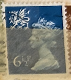
| SOURCE | TITLE| IMAGE MATCH | click to source page |
| lastdodo.com | Queen Elizabeth II 15 (1980) - Great Britain - Wales - LastDodo | 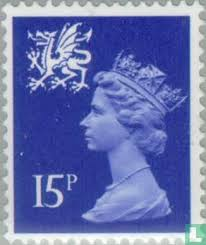 |
| eBay | Travelstamps: Great Britain Wales Stamps Sg W14 - QEII 3p Used Handstamped | eBay | 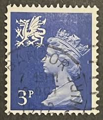 |
| Dauwalders | Elliptical Perforations | 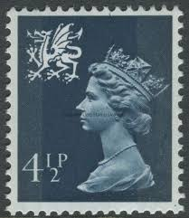 |
| MachinStamps.co.uk | Listings from 'ianlasoksmith' - 80 items per page - Highest Price First | Machin Stamps | 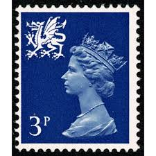 |
| MachinStamps.co.uk | Listings from 'ianlasoksmith' - Page 34 of 46 - 10 items per page - Lowest Price First | Machin Stamps | 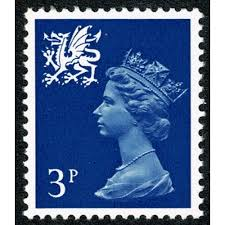 |
| eBay | Pre-Decimal 9p Denomination British Elizabeth II Stamps for sale | eBay | 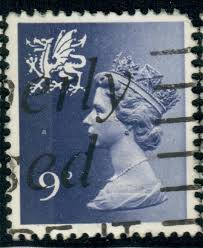 |
| Collect GB Stamps | British Stamps for 1983 : Collect GB Stamps | 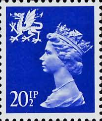 |
| Albany Stamps | SG W30 10½p | 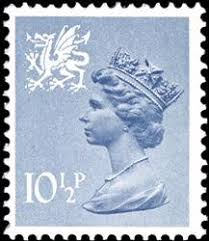 |
| Poppe Stamps | Poppe Stamps: Wales, 1971, W40, Queen Elizabeth, Sculptures, Dragons - stamps for sale by theme and country | 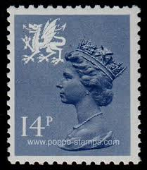 |
| Jerwood Philatelics | Wales : Jerwood Philatelics, booklets and stamps of Great Britain | 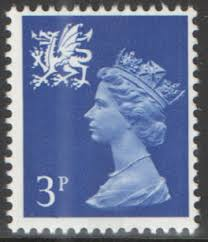 |
| EdinPhoto | Post Card History - Stamps on postcards sent to the UK - 1952 to 2000s - Scottish stamps | 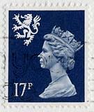 |
| BB Stamps | Regionals Wales – Great British Stamps 1840 to DATE. Mint & Used GB Stamps | 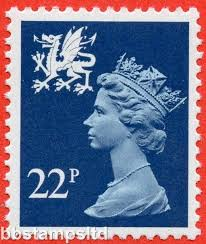 |
| HipStamp | Wales & Monmouthshire Stamp:1971-3 SC# WMMH1//16 very old used Stamps | Great Britain, Back of Book (Other) - Machin Head Stamp / HipStamp | 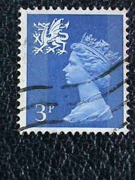 |
| Great Britain. 1967-1969 First Machin Definitive Stamps | 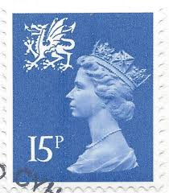 | |
| ahornphila.de | Stamps shop of Anett | 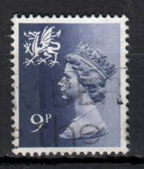 |
| Collect GB Stamps | Collect GB Stamps | 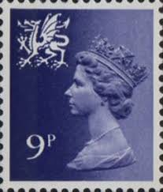 |
| Collect GB Stamps | Regional Definitive - Wales (1981) : Collect GB Stamps | 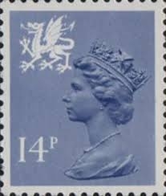 |
| catstamps.org | Scotland Heraldic Cats | 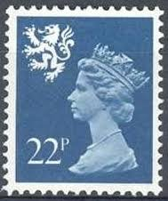 |
| Shutterstock | Great Britain Circa 1971 Stamp Printed Stock Photo 67738393 | Shutterstock | 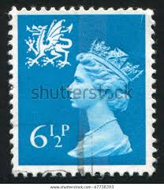 |
| eBay | GREAT BRITAIN REGIONAL ISSUE STAMP MINT HINGED LOT 1908AF | eBay | 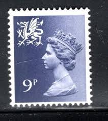 |
| Dreamstime.com | Regional Definitives Stock Photos - Free & Royalty-Free Stock Photos from Dreamstime | 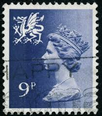 |
| IG Stamps | S15 3p Ultramarine 2 Bands Scotland Regional Stamps | 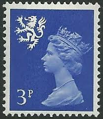 |
| MachinStamps.co.uk | Listings from 'ianlasoksmith' in Machin Errors & Varieties > Missing Phosphors - 80 items per page - Ending Soon | Machin Stamps | 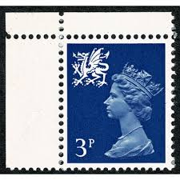 |
| History on Paper : r/stamps | 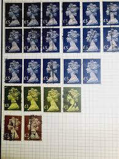 | |
| eBay | Great Britain - 1967 - Definitives-Queen Elizabeth II - 1Sh 6P - Used - #1 | eBay | 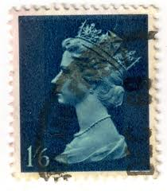 |
| Todocolección | regionales definitivos de gales 1993- isabel ii - Buy Antique stamps of United Kingdom on todocoleccion | 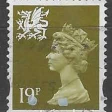 |
| Shutterstock | 6+ Hundred Wales Post Stamp Royalty-Free Images, Stock Photos & Pictures | Shutterstock | 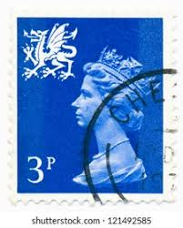 |
| Alamy | Scottish Used Postage Stamp showing Portrait of Queen Elizabeth 2nd, circa 1958 to 1970 Stock Photo - Alamy | 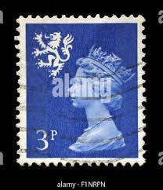 |
| Dreamstime.com | Coat Arms Queen Elizabeth Ii Stock Photos - Free & Royalty-Free Stock Photos from Dreamstime | 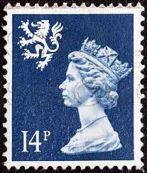 |
| eBay | Queen Elizabeth II Great Britain 1968 stamp | eBay | 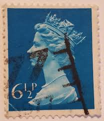 |
| Dreamstime.com | Isolated Great Britain Stamp Editorial Image - Image of england, historic: 383931945 | 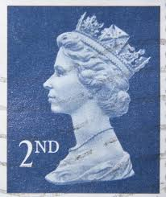 |
| eBay | UK - Wales - 1971 - Queen Elizabeth II - New Definitive Issue - 3P - #2582 | eBay | 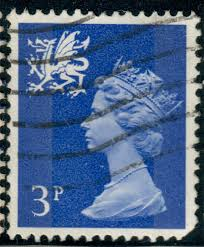 |
| Dreamstime.com | 02.11 editorial stock image. Image of paper, hobby, monarchy - 182136979 | 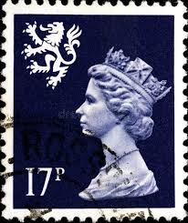 |
| Shutterstock | Dragon Stamp: Over 1,407 Royalty-Free Licensable Stock Photos | Shutterstock | 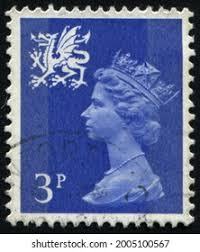 |
| eBay UK | Large 1 Number Used Great Britain Elizabeth II Decimal Stamps (1971-Now) for sale | eBay UK | 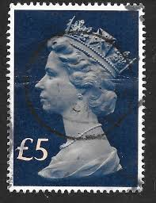 |
| IG Stamps | W46 18p Deep Violet Phosphorised Paper Wales Regional Stamps | 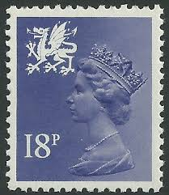 |
| ProBoards | Machin SW UV scans | The Stamp Forum (TSF) | 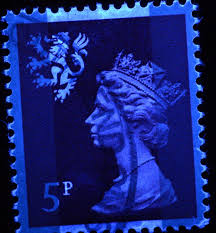 |
| HipStamp | Great Britain #500 5P Queen Elizabeth 2, used F-VF | Great Britain, General Issue Stamp / HipStamp |  |
| IG Stamps | W39 14p Grey-Blue Phosphorised Paper Wales Regional Stamps | 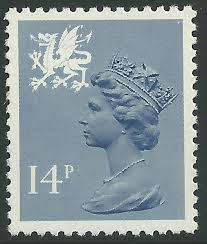 |
| HipStamp | Great Britain #MH16 1sh 6p Queen Elizabeth II | Great Britain, General Issue Stamp / HipStamp | 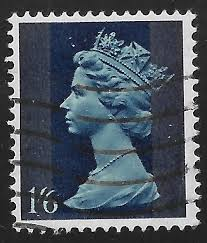 |
| Collect GB Stamps | Regional Definitive - Scotland (1974) : Collect GB Stamps | 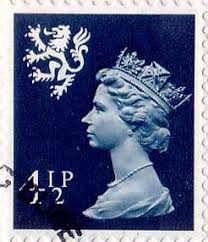 |
| eBay | Royalty Machine Cancel British Elizabeth II Stamps for sale | eBay | 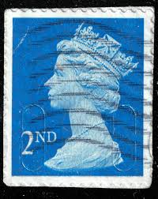 |
| Dreamstime.com | 524 Queen Elizabeth Second Stock Photos - Free & Royalty-Free Stock Photos from Dreamstime | 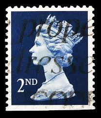 |
| seemystamps.com | See My Stamps! - A Place to Show Off Your Stamp Collection | Page 132 | 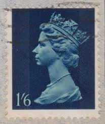 |
| eBay | Decimal British Elizabeth II Stamps £ 2 Denomination for sale | eBay | 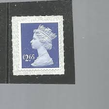 |
| ebid.net | WALES, QE II, Machin, blue-grey 1981, 14p on eBid United States | 205682937 | 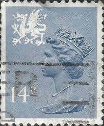 |
| HipStamp | Great Britain, Scott #WMMH2, used (o), 1971, Machin, Queen Elizabeth II, 3p | Great Britain, Back of Book (Other) - Machin Head Stamp / HipStamp | 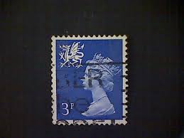 |
| Alamy | Machin stamp hi-res stock photography and images - Page 2 - Alamy | 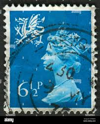 |
| Etsy | Bulk Lot of Stamps - Etsy New Zealand | 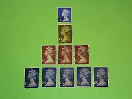 |
| eBay | Great Britain - 2009 - 2nd - Definitive Issue - Queen Elizabeth II - #18263 | eBay | 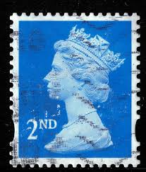 |
| Alamy | GREAT BRITAIN - CIRCA 2010: A used postage stamp from the UK, depicting an illustration of Wallace and Gromit singing Christmas Carols, circa 2010 Stock Photo - Alamy |  |
| The Postal Museum | First or second class? - The Postal Museum | |
| eBay | 2 Cent Mint Never Hinged/MNH Multi-Color US Postage Stamps for sale | eBay | |
| Shutterstock | Karnal Haryana India -july 30th 2025- Stock Photo 2668735581 | Shutterstock | |
| Albany Stamps | SG S74 28p blue perf 15 | |
| commonwealthstamps.com | Scotland | |
| eBay | GREAT BRITAIN - 1980 - Q.E.II - LOT OF 6 STAMPS OF £5 - USED - #2189 | eBay | |
| Shutterstock | Singapore July 12 2021 Stamp Printed Stock Photo 2006558819 | Shutterstock | |
| IG Stamps | SG831b 1970 1 Black Decimal Machin High Value Stamps |